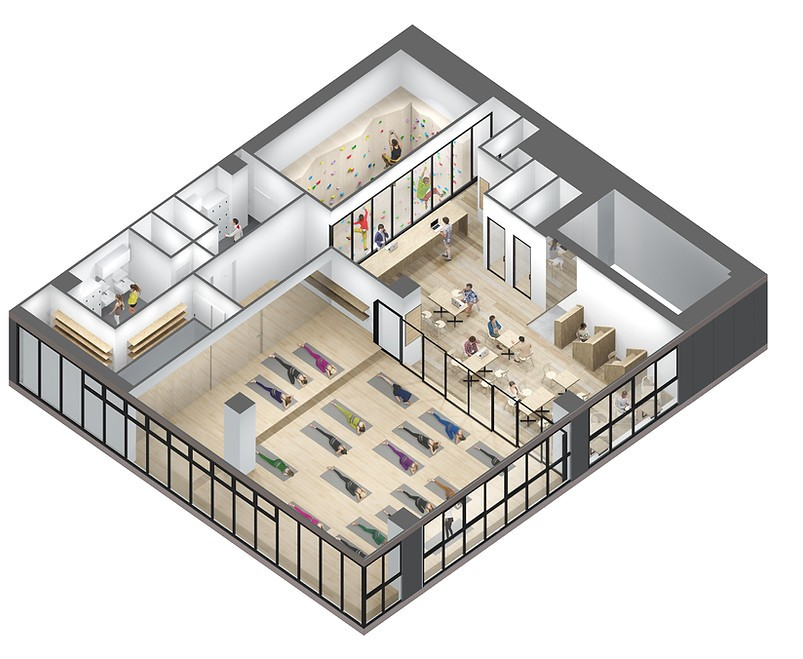
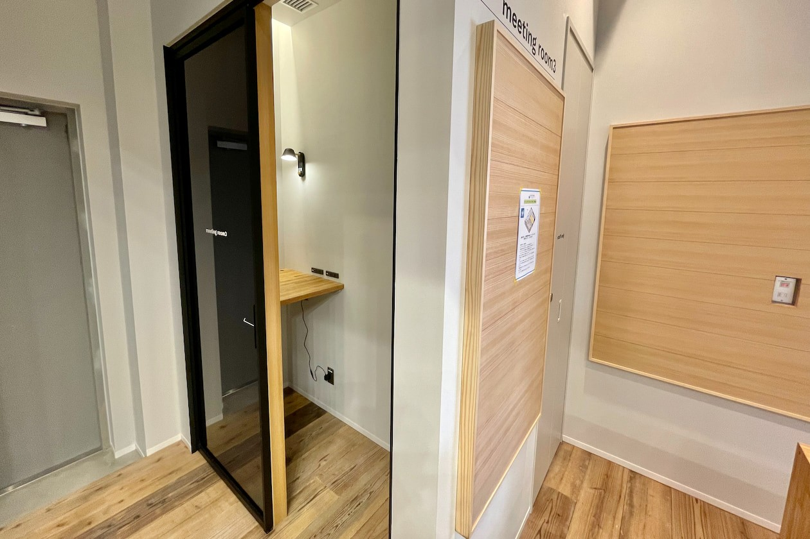
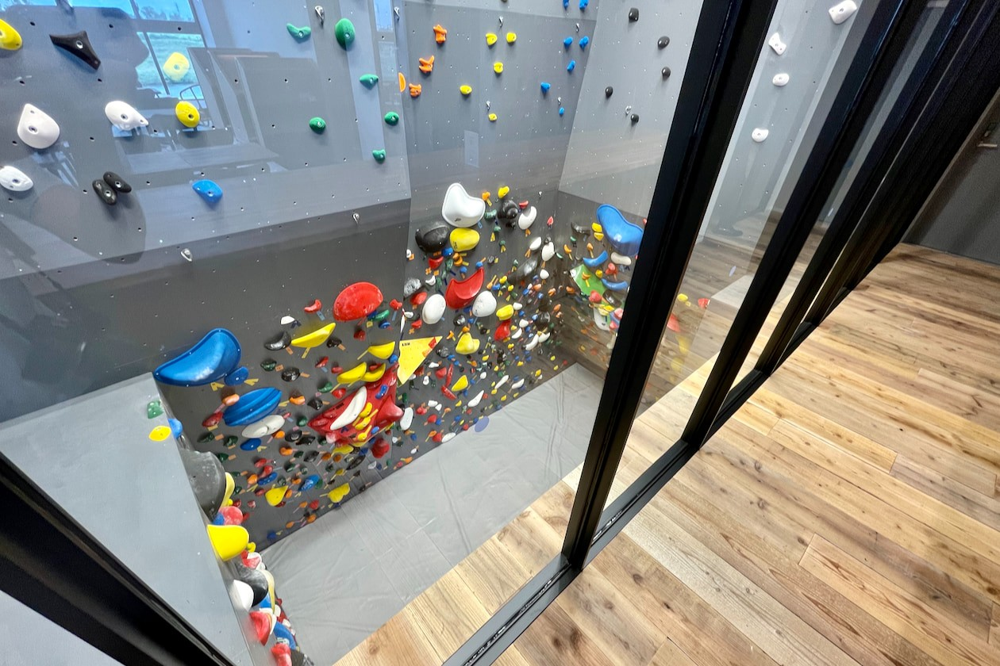

WORK LOUNGE & FACILITY
会員制ワークラウンジ＆施設フロア
多摩川を望む特等席で、働く・くつろぐ・整える。
川を眺めながら、静かに自分と向き合う時間。
東京のオアシス・多摩川の自然に囲まれた居心地の良い空間で、心も身体も満たされるWell-beingな日常をお過ごしいただけます。
FACILITY & FLOOR
施設フロア・全6エリアのご案内

2F ヨガスタジオ（約100㎡）
多摩川と広大な空を一望する約100㎡の自然光スタジオ。足裏に心地よい天然無垢材のフローリングと、川風を感じるパノラマビューの中でヨガやピラティスを深めます。

2F 会員制ワークラウンジ
フリーパス会員様がいつでも無制限でご利用いただけるワークラウンジ。高速Wi-Fi、全席電源、オンライン通話ブースを完備し、テレワークや読書に最適な環境です。

1F ボルダリングジム
高さ3.5m〜4mのボルダリングウォールに約100ルートを設置。未経験者や子どもから大人までパズル感覚で身体を動かせます。シューズ・チョークレンタル完備。

ロッカー＆シャワールーム
男女別の清潔なシャワールーム、鍵付きロッカー、パウダールーム、ドライヤーを完備。1階は屋外直結動線となっており、リバーSUPや多摩川ランステとしても利用可能です。

1F SUP艇庫（多摩川直結）
目の前の多摩川水辺へそのまま出艇できる専用SUP艇庫。高品質なSUPボード、パドル、ライフジャケットを常備し、インストラクターのサポートのもと安全に水上へ漕ぎ出せます。

クラブハウス・レンタル対応
せいせきカワマチに面したサクテラスモール1F・2Fのクラブハウス。河川敷レジャーグッズの貸出や、イベント・撮影・研修などのスタジオ貸切レンタルに対応しています。
FLOOR MAP & ARCHITECTURE
1F・2F フロアマップと空間設計のこだわり
多摩川の豊かな自然景観と建物の機能美がシームレスに溶け合う空間デザイン。
1階のアウトドアフィールド直結フロアから、2階の光あふれるリトリート＆ワークフロアまで、計算された心地よい動線が広がります。

1F：多摩川へ直結するアクティブフロア
吹き抜けが開放的なボルダリングジム、多摩川水辺へ直接アクセスできるSUP艇庫、そして屋外から直接入室できる更衣室・シャワールーム（シャワー）を配置。泥や水滴を気にせず利用できる動線で、多摩川のアウトドアアクティビティを日常に引き寄せます。

2F：光と風に包まれるリトリートフロア
約100㎡の広々としたヨガ・ピラティススタジオと、多摩川の広大なパノラマビューを望む会員制ワークラウンジ。天然無垢材の床と全面ガラス窓から注ぐ柔らかな自然光が、心身を深いリラクゼーションと創造的な集中へと導きます。
WORK LOUNGE FEATURES
会員制ワークラウンジの3つの快適環境

高速Wi-Fi・全席電源＆半個室ブース
安定した高速Wi-Fiネットワークと、各席に配備されたコンセント・USB充電口、木目調の半個室集中ブースを完備。長時間のテレワークもストレスなくスムーズに行えます。

オンライン会議・通話対応の個室ブース
防音性に配慮した個室型のフォンブース（Webミーティング・通話専用スペース）を設置。周囲への配慮とプライバシーを両立し、オンライン打ち合わせにも安心して参加いただけます。
多摩川ビューのパノラマカウンター席
窓の外に広がる多摩川の水面や川辺の木々を眺めながら過ごせる特等席。適度な自然の借景が目の疲れを癒やし、思考を整理するための最高の環境を提供します。
CAFE & SHOWER AMENITIES
カフェ＆清潔なシャワー・アメニティ設備

仕事の合間や運動後に寄り添うカフェメニュー
2階ラウンジでは、香り高い豆を丁寧に抽出するハンドドリップコーヒーや身体に優しいハーブティーをご用意。また、運動後の素早い栄養補給やコンディショニングに最適な、無添加のオリジナルプロテインスムージーもお楽しみいただけます。
多摩川の景色を眺めながら、ホッと一息つく贅沢なブレイクタイムをお過ごしください。

清潔なロッカー＆シャワールーム（ランステ利用可）
男女別の清潔なシャワールーム（シャワー）、ダイヤル式鍵付きロッカー、パウダールーム、大風量ドライヤーを完備。フリーパス会員様は何度でも無料でご利用いただけます。
都度利用（1回770円）によるシャワー＆ロッカーのみの利用にも対応しており、多摩川河川敷でのランニングやサイクリング、ウォーキングのランステ拠点としても多くの方に愛用されています。
STUDIO & SPACE RENTAL
スタジオ＆ラウンジ レンタルサービス

多摩川を一望する約100㎡の開放的な空間を貸切で
RIVER PARK 聖蹟桜ヶ丘の2Fスタジオおよびワークラウンジは、営業時間外や特別枠にて法人研修、ヨガ・ピラティスワークショップ、健康セミナー、スチール写真撮影、TV・CM・Web動画ロケーション撮影などのレンタル利用を承っております。
高品質な音響設備、ヨガプロップス、大型プロジェクターなどのオプションも充実。自然光が美しく差し込む水辺の特別なロケーションで、思い通りのイベントを実現いただけます。
レンタルサービスの詳細・料金を見る